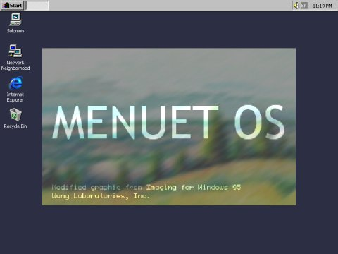

| Sulaiman Chang Personal Website |
|
Tutorial 26 : Splash Screen
code for tut_26a.asm
format PE GUI 4.0 DLL
entry DllMain
include '%fasminc%\win32a.inc'
section '.data' data readable writeable
insH dd ? ;handle for instance
wndCls WNDCLASS
wndClsName db 'TUT_26A',0
wndMsg MSG
wndH dd ?
bmpH dd ?
bmpOldH dd ?
bmp BITMAP
bmp1Rect RECT
ps PAINTSTRUCT
dcH dd ?
dcMemH dd ?
dlgY dd ?
dlgX dd ?
dlgRect RECT
desktopRect RECT
timerId dd ?
section '.code' code readable executable
proc DllMain,hinstDll,fdwReason,lpvReserved
cmp [fdwReason],DLL_PROCESS_ATTACH
jne @f
push [hinstDll]
pop [insH]
call show_bitmap
@@:
mov eax,TRUE
return
endp
proc show_bitmap
push [insH]
pop [wndCls.hInstance]
mov [wndCls.style],CS_HREDRAW + CS_VREDRAW
mov [wndCls.lpfnWndProc],splash_procedure
mov [wndCls.lpszClassName],wndClsName
mov [wndCls.hbrBackground],COLOR_WINDOW + 1
invoke LoadIcon,NULL,IDI_APPLICATION
mov [wndCls.hIcon],eax
invoke LoadCursor,NULL,IDC_ARROW
mov [wndCls.hCursor],eax
invoke RegisterClass,wndCls
invoke CreateWindowEx,NULL,wndClsName,NULL,\
WS_POPUP + WS_VISIBLE,\
CW_USEDEFAULT,CW_USEDEFAULT,600,371,\
NULL,NULL,[insH],NULL
mov [wndH],eax
;+---------------------------+
;| entering the message loop |
;+---------------------------+
window_message_loop_start:
invoke GetMessage,wndMsg,NULL,0,0
or eax,eax
je window_message_loop_end
invoke TranslateMessage,wndMsg
invoke DispatchMessage,wndMsg
jmp window_message_loop_start
window_message_loop_end:
return
endp
proc splash_procedure,hWnd,uMsg,wParam,lParam
push ebx esi edi
cmp [uMsg],WM_CREATE
je wmCREATE
cmp [uMsg],WM_LBUTTONDOWN
je wmLBUTTONDOWN
cmp [uMsg],WM_PAINT
je wmPAINT
cmp [uMsg],WM_TIMER
je wmTIMER
cmp [uMsg],WM_DESTROY
je wmDESTROY
wmDEFAULT:
invoke DefWindowProc,[hWnd],[uMsg],[wParam],[lParam]
jmp wmBYE
wmCREATE:
invoke GetWindowRect,[hWnd],dlgRect
invoke GetDesktopWindow
invoke GetWindowRect,eax,desktopRect
push FALSE ;MoveWindow :: no repaint
mov eax,[dlgRect.bottom]
sub eax,[dlgRect.top]
mov [dlgY],eax
push eax ;MoveWindow :: new height for window
mov eax,[dlgRect.right]
sub eax,[dlgRect.left]
mov [dlgX],eax
push eax ;MoveWindow :: new width for window
mov eax,[desktopRect.bottom]
sub eax,[dlgY]
shr eax,1
push eax ;MoveWindow :: new position of the top of the window
mov eax,[desktopRect.right]
sub eax,[dlgX]
shr eax,1
push eax ;MoveWindow :: new position of the left side of the window
push [hWnd] ;MoveWindow :: handle for window
call [MoveWindow]
invoke LoadBitmap,[insH],300
mov [bmpH],eax
invoke SetTimer,[hWnd],1,2000,NULL
mov [timerId],eax
jmp wmBYE
wmPAINT:
invoke BeginPaint,[hWnd],ps
mov [dcH],eax
invoke CreateCompatibleDC,eax
mov [dcMemH],eax
invoke SelectObject,eax,[bmpH]
mov [bmpOldH],eax
invoke GetObject,[bmpH],sizeof.BITMAP,bmp
;invoke BitBlt,[dcH],0,0,[bmp.bmWidth],[bmp.bmHeight],[dcMemH],0,0,SRCCOPY
;the usage of StretchBlt is here
;-------------------------------
invoke StretchBlt,[dcH],0,0,600,371,\
[dcMemH],0,0,[bmp.bmWidth],[bmp.bmHeight],SRCCOPY
invoke SelectObject,[dcMemH],[bmpOldH]
invoke DeleteObject,[dcMemH]
invoke EndPaint,[hWnd],ps
jmp wmBYE
wmLBUTTONDOWN:
invoke DestroyWindow,[hWnd]
jmp wmBYE
wmTIMER:
invoke SendMessage,[hWnd],WM_LBUTTONDOWN,NULL,NULL
invoke KillTimer,[hWnd],[timerId]
jmp wmBYE
wmDESTROY:
cmp [bmpH],NULL
je @f
invoke DeleteObject,[bmpH]
@@:
invoke PostQuitMessage,NULL
jmp wmBYE
wmBYE:
pop edi esi ebx
return
endp
section '.idata' import data readable
library KERNEL32, 'KERNEL32.DLL',\
USER32, 'USER32.DLL',\
GDI32, 'GDI32.DLL'
import KERNEL32,\
GetModuleHandle, 'GetModuleHandleA',\
ExitProcess, 'ExitProcess'
import USER32,\
RegisterClass, 'RegisterClassA',\
RegisterClassEx, 'RegisterClassExA',\
CreateWindowEx, 'CreateWindowExA',\
DefWindowProc, 'DefWindowProcA',\
LoadCursor, 'LoadCursorA',\
LoadIcon, 'LoadIconA',\
LoadBitmap, 'LoadBitmapA',\
LoadMenu, 'LoadMenuA',\
BeginPaint, 'BeginPaint',\
EndPaint, 'EndPaint',\
GetWindowRect, 'GetWindowRect',\
GetDesktopWindow, 'GetDesktopWindow',\
MoveWindow, 'MoveWindow',\
SetTimer, 'SetTimer',\
KillTimer, 'KillTimer',\
ShowWindow, 'ShowWindow',\
MessageBox, 'MessageBoxA',\
SendMessage, 'SendMessageA',\
GetMessage, 'GetMessageA',\
DestroyWindow, 'DestroyWindow',\
TranslateMessage, 'TranslateMessage',\
DispatchMessage, 'DispatchMessageA',\
PostQuitMessage, 'PostQuitMessage'
import GDI32,\
CreateCompatibleDC, 'CreateCompatibleDC',\
SelectObject, 'SelectObject',\
GetObject, 'GetObjectA',\
GetCurrentObject, 'GetCurrentObject',\
StretchBlt, 'StretchBlt',\
BitBlt, 'BitBlt',\
DeleteDC, 'DeleteDC',\
DeleteObject, 'DeleteObject'
section '.edata' export data readable
export 'TUT_24A.DLL',\
show_bitmap, 'show_bitmap',\
splash_procedure, 'splash_procedure'
section '.reloc' fixups data discardable
section '.rsrc' resource data readable
directory RT_BITMAP, appBmp
resource appBmp,\
300,LANG_NEUTRAL,bmp1
bitmap bmp1, "splash.bmp"
code for tut_26b.asm
format PE GUI 4.0
entry start
include '%fasminc%\win32a.inc'
section '.data' data readable writeable
wndH dd ?
insH dd ?
wndClsName db 'TUT_26B',0
wndTitle db 'Tutorial 26B',0
wndCls WNDCLASS
wndMsg MSG
libName db 'TUT_26A.DLL',0
section '.code' code readable executable
start:
invoke LoadLibrary,libName
cmp eax,NULL
je @f
invoke FreeLibrary,eax
@@:
invoke GetModuleHandle,0
mov [insH],eax
mov [wndCls.hInstance],eax
mov [wndCls.style],CS_HREDRAW or CS_VREDRAW
mov [wndCls.lpfnWndProc],window_procedure
mov [wndCls.lpszClassName],wndClsName
mov [wndCls.hbrBackground],COLOR_BTNFACE+1
invoke LoadIcon,NULL,IDI_APPLICATION
mov [wndCls.hIcon],eax
invoke LoadCursor,NULL,IDC_ARROW
mov [wndCls.hCursor],eax
invoke RegisterClass,wndCls
invoke CreateWindowEx,0,\
wndClsName,wndTitle,\
WS_OVERLAPPEDWINDOW + WS_VISIBLE,\
CW_USEDEFAULT,CW_USEDEFAULT,400,240,\
NULL,NULL,[insH],NULL
mov [wndH],eax
invoke ShowWindow,eax,SW_MAXIMIZE
;+---------------------------+
;| entering the message loop |
;+---------------------------+
window_message_loop_start:
invoke GetMessage,wndMsg,NULL,0,0
or eax,eax
je window_message_loop_end
invoke TranslateMessage,wndMsg
invoke DispatchMessage,wndMsg
jmp window_message_loop_start
window_message_loop_end:
invoke ExitProcess,0
;+----------------------+
;| the window procedure |
;+----------------------+
proc window_procedure,hWnd,uMsg,wParam,lParam
push ebx esi edi
cmp [uMsg],WM_DESTROY
je wmDESTROY
wmDEFAULT:
invoke DefWindowProc,[hWnd],[uMsg],[wParam],[lParam]
jmp wmBYE
wmDESTROY:
invoke PostQuitMessage,0
wmBYE:
pop edi esi ebx
return
endp
section '.idata' import data readable
library KERNEL32, 'KERNEL32.DLL',\
USER32, 'USER32.DLL'
import KERNEL32,\
GetModuleHandle, 'GetModuleHandleA',\
LoadLibrary, 'LoadLibraryA',\
FreeLibrary, 'FreeLibrary',\
ExitProcess, 'ExitProcess'
import USER32,\
RegisterClass, 'RegisterClassA',\
CreateWindowEx, 'CreateWindowExA',\
DefWindowProc, 'DefWindowProcA',\
LoadCursor, 'LoadCursorA',\
LoadIcon, 'LoadIconA',\
SendMessage, 'SendMessageA',\
GetMessage, 'GetMessageA',\
MessageBox, 'MessageBoxA',\
ShowWindow, 'ShowWindow',\
DestroyWindow, 'DestroyWindow',\
TranslateMessage, 'TranslateMessage',\
DispatchMessage, 'DispatchMessageA',\
PostQuitMessage, 'PostQuitMessage'
Result : |
| Copyright © 2004 Sulaiman Chang. All Rights Reserved. |